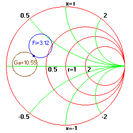

Example: Small Signal Amplifier Design Using S-Parameters Example: Small Signal Amplifier Design Using S-Parameters
Example: Small Signal Amplifier Design Using S-Parameters Example: Small Signal Amplifier Design Using S-ParametersThis example analyses small signal amplifier design in terms of its stability, noise and gain properties. This design example is based on Hewlett-Packard Application Note 970, February 1978, as presented by G. Gonzalez in Microwave Transistor Amplifiers, Prentice-Hall, 1984 and Dale D. Henkes in RF Design, December 1993 issue.
Problem: Design a microwave amplifier with lowest noise figure for available power gain of 10.55 dB at an operating frequency of 6 GHz. The device parameters are :
S11 = 0.641/-171.3 (magnitude./angle)
S12 = 0.057/16.3 (magnitude./angle)
S21 = 2.058/28.5 (magnitude./angle)
S22 = 0.572/-95.7 (magnitude./angle)
Fmin = 2.9 dB
Gammao = 0.542/141 (magnitude./angle)
Rn = 9.42 Ohms
Solution: From the Amplifier Design/Analysis window menu select "S-Parameters" to enter the data, select "Stability" to verify that the device is unconditionally stable ( K= 1.504 < 1 and Delta = 0.301 < 1). then choose "OK" to close the window. Similarly enter noise parameters, enter 3.12 dB for Fi and Select "OK". From the "Circles" menu choose "Available Gain Circles" for 10.55 dB and "Noise Circles" .for Noise figure of 4.12 dB. Decrement the Noise figure until it intersects the 10.55 dB gain circle and .click "Redraw" to clean-up the chart. In the bottom of the window change GammaS such that it moves to the intersection of the two circles. We now have the required source and load impedance. They are : ZS = 13.98 + j7.57 and ZL = 17.92 + j 35.64. The next step is to transfer these values to the schematic and design a suitable matching network. The following figure shows the display window.
